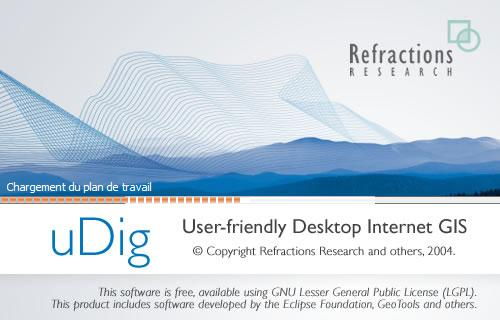
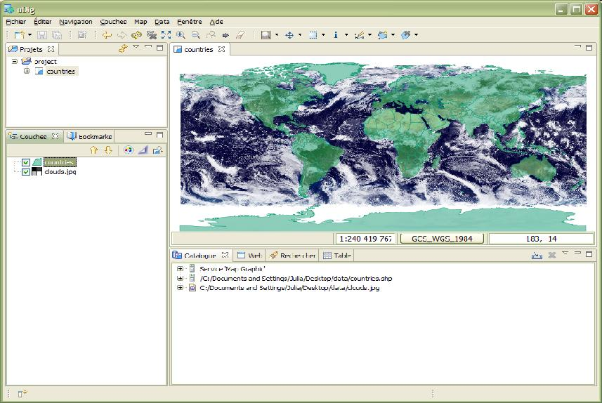
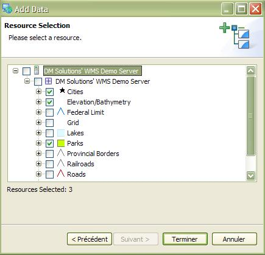
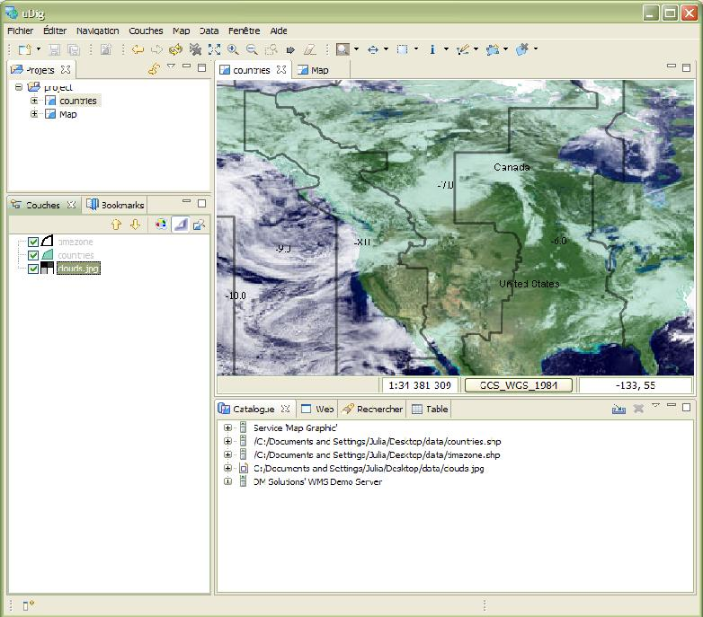

Démarrage rapide
Ceci est une introduction rapide à l'application uDig inclus dans le cadre de l'aide en ligne.
Exemple de données
Avant de commencer s'il vous plaît prenez un moment pour télécharger des données d'échantillon, nous avons mis à disposition sur le web:
- Clic droit sur le lien et choisissez Enregistrer le lien sous:
data-v1_1.zip
- A la question de l'emplacement du fichier pour choisir un emplacement approprié tel que votre ordinateur de bureau
- Décompressez le contenu de ce fichier dans un dossier de données (data) sur votre bureau
Si vous avez vos propres données SIG s'il vous plaît n'hésitez pas à expérimenter. Faisant usage de l'échantillon de données ci-dessus vous permettra de suivre ce didacticiel, étape par étape.
Application uDig
- Choisissez uDig 1,1> uDig * dans le menu Démarrer
- La demande de prendre quelques instants pour démarrer

L'application uDig tient un dossier de configuration dans votre répertoire, le dossier sera créé la première fois que l'application est lancée. Si vous avez des difficultés, ou utilisez uDig sur Linux ou Mac s'il vous plaît réexaminer l'Running uDig page de référence.
Bienvenue Voir
- Lorsque vous démarrez uDig pour la première fois la vue * * Bienvenue reprend l'ensemble de l'affichage. Cet écran a des liens vers des tutoriels, la documentation et le site Web du projet.
- Cliquez sur la flèche étiqueté * * Workbench dans le coin supérieur droit, de révéler le contenu de la uDig établi.

Vous pouvez revenir à la vue Bienvenue à n'importe quel moment en sélectionnant l'* Aide> Bienvenue * dans la barre de menus.
Workbench
La fenêtre Workbench offre de multiples Editors (chacun montrant une carte), et soutenant Views (offrant des informations sur l'état actuel de carte).

Ci-dessus est un typique uDig session avec les Carte éditeur, Projets vue, Couches vue Catalog et voir étiquetés. Ces vues seront décrits plus en détail car nous démontrer leur utilisation.
Fichiers
Pour commencer à nous allons charger certaines des données de l'échantillon que vous avez téléchargé plus tôt.
- Choisissez Calque> Ajouter dans la barre de menus pour ouvrir l'Ajouter Data wizard
- Sélectionner Fichiers de la liste des sources de données
Suivant Presse Ouvert pour ouvrir une boîte de dialogue Fichier
- Sélectionnez les fichiers suivants à partir de votre dossier de données: countries.shp
Presse Ouvert
- Un nouveau Carte éditeur sera ouvert basé sur le contenu de votre shapefile. Le nom par défaut et de la projection de la carte a été prise à partir de votre shapefile.
- Vous pouvez voir la vue Catalogue a été mis à jour avec une entrée pour countries.shp et clouds.jpg. Ce point de vue est utilisé pour suivre l'utilisation des ressources par l'application uDig.
Le Couches vue montre une seule couche est affichée sur cette carte. Ce point de vue est utilisée pour changer l'ordre de l'information et de l'apparence de votre carte.
Le point de vue Projets a été mis à jour pour montrer que votre carte est stockée dans les projets> pays. Vous pouvez avoir plusieurs projets ouverts à la fois, chaque projet peut avoir plusieurs cartes.
- Lancez votre dossier de données dans les fenêtres
Faites glisser le fichier clouds.jpg sur l'Éditeur de carte, une nouvelle couche est ajoutée à la carte.
- Vous pouvez voir l'ordre dans lequel les couches sont puisés dans la couche vue. À l'heure actuelle, la couche clouds.jpg est attirée sur les pays de la couche.
Sélectionnez le clouds.jpg couche dans le catalogue de vue et faites-la glisser vers le bas de la liste

- Info: * Une des questions les plus courantes posées lors uDig est considérée pour une entreprise est la quantité de mémoire que l'application utilise. Contrairement à la plupart des applications SIG uDig peuvent avoir besoin d'un montant fixe de la mémoire. Le shapefile ci-dessus n'est pas chargé en mémoire, nous avons une politique de maintien de données sur le disque et le dessin de données comme ceci shapefile sur l'écran en fonction des besoins.
Conseil Vous pouvez également faire glisser des shapefiles uDig directement dans l'application!
Carte
Vous pouvez contrôler dans le monde où l'Éditeur de carte est à la recherche en utilisant les outils de navigation dans la barre d'outils en haut de l'écran.
 Zoom outil est disponible par défaut
Zoom outil est disponible par défaut
- Utilisez le zoom en traçant une boîte en utilisant le bouton gauche de la souris autour de la zone de la mondialement que vous souhaitez voir.
- Pour effectuer un zoom arrière dessiner une boîte avec le bouton droit de votre souris. La carte actuelle degrés sera localisé dans la boîte vous dessinez.
 Pan outil peut être utilisé pour faire défiler autour de votre carte sans changer l'échelle.
Pan outil peut être utilisé pour faire défiler autour de votre carte sans changer l'échelle.- Il y a également plusieurs boutons de navigation qui peut être utilisé à tout moment:
 Montrer tous, peut être utilisée pour revenir à la pleine étendue à tout moment
Montrer tous, peut être utilisée pour revenir à la pleine étendue à tout moment Zoom avant et
Zoom avant et  Zoom arrière peut être utilisé pour modifier l'échelle d'un montant fixe.
Zoom arrière peut être utilisé pour modifier l'échelle d'un montant fixe.
#Vous pouvez utiliser Navigation> Back et Navigation> Forward dans la barre de menu à bien le cycle des lieux qu'ils ont visités précédemment.
Astuce: La plupart des outils vous permettent de Pan en tenant le bouton central de contrôle et de l'échelle en utilisant la molette de défilement.
Web Map Server
Une des raisons pour utiliser une application comme uDig est de l'accès gratuit de tous les grands de l'information géospatiale disponible sur le web. Cette section traite de l'utilisation de serveurs Web Map qui rendent disponibles couches d'information que vous pouvez mélanger dans vos propres cartes.
- Sélectionnez Fichier> Nouveau> Nouveau Carte de la barre de menu
- Modification à la vue Web, cliquez sur l'onglet à côté de la vision Catalogue de révéler le Web.
- Cliquez sur le lien WMS *: * dm solutions lien

- A partir de la page de sélection des ressources, nous allons choisir les couches suivantes:
#Élévation / Bathymétrie
#Parcs
#Villes

Presse Terminer pour ajouter ce calque à votre carte

- Utilisez
 Zoom Outil de se rapprocher de l'un des parcs
Zoom Outil de se rapprocher de l'un des parcs
- Passage à
 Information et cliquez sur l'un des parcs pour en savoir plus
Information et cliquez sur l'un des parcs pour en savoir plus
Astuce: Vous pouvez alterner entre les infos et les outils de zoom en appuyant sur Z et I sur le clavier.
Style
- Sélectionnez le projet> pays - vous pouvez double-cliquer pour ouvrir cette carte, ou Clic Droit et choisissez Ouvrir la carte
- Sélectionnez le pays dans la Couche vue
- Ouvrez le Style Editor en faisant un clic droit sur le calque pays dans la vue couches. Suivant, changement et choix de style.
- Nous allons changer quelques petites choses sur la façon dont sont affichés pays
- Line: Cliquez sur la couleur et changer la couleur à BLACK
- Trame: décochez la case pour désactiver les combler
- Label: cocher la case et choisir CNTRY_NAME à partir de la liste des attributs

Presse Appliquer pour voir ce que cela ressemble à celui de votre carte, la couche vue sera également mise à jour pour refléter le style actuel
- Lorsque vous êtes satisfait du résultat, vous pouvez appuyez sur Fermer pour fermer la boîte de dialogue de licencier
- Quelques fichiers comprennent les paramètres de style, choisissez Calque> Ajouter dans la barre de menus
Sélectionnez Fichiers de la liste des sources de données dans le menu Couches>Ajouter et appuyez sur Suivant
- Utiliser le sélecteur de fichier de l'ouvrir timezone.shp et appuyez sur Ouvrir
- C'est un peu difficile de voir ce qui se passe avec la couche clouds.jpg fournissant autant de détails. Sélectionnez Map> Mylar dans la barre de menu de se concentrer sur le calque sélectionné
- Utilisation de la couche vue select timezone, pays et clouds.jpg à son tour pour voir l'effet

- Vous pouvez désactiver cet effet, à tout moment, en utilisant la carte> Mylar dans la barre de menus.
Quel est Suivant
Ce n'est que la première étape sur la route de l'aide uDig. Il ya beaucoup plus grande du matériel (et la capacité) à votre gauche pour découvrir nos soluces.
- Walkthrough 1 - Essayez l'utilisation de PostGIS, extraire des données à partir d'un Web Feature Server et étudier l'utilisation des Thèmes avec notre puissant Color Brewer technologie.
- Walkthrough 2 - Apprendre à créer et utiliser les shapefiles Edit outils pour manipulare fonction des données, couvre l'installation de GeoServer et à l'édition d'un Web Feature Server.
(c) Copyright (c) 2004-2008 Refractions Research Inc. and others.